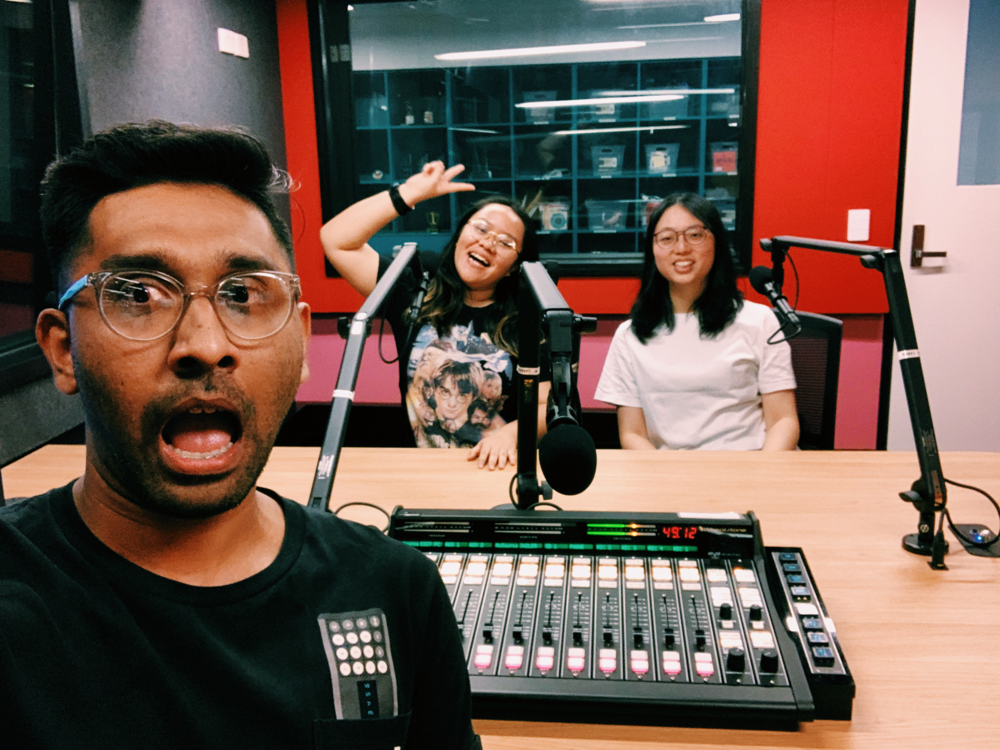

How many rejections did you receive until now? I cannot remember my number but it must be a big one.
I thought I would never forget the feeling of getting my first rejection, but no, I have no memories now (whether that is on purpose or not).
No matter how good the studios or the companies are, when they send their rejection letters, they become numbers - they are all the same
(for those who do not get back, I imagine you must be very busy, so I keep the number automatically runs).
I still feel excited while applying for new opportunities, feel stressed while waiting for the results, but I train myself not to feel anything when I get rejected
- it is quite simple because as the number growing, you eventually get used to it anyway. Besides that, as people who value creativity the most,
all these rejections are boring, boring, boring!
People keep saying the same shit when they reject everything, even the rejection emails from the most creative companies in the world look the same:
thank you for your time and effort, you are good, but you are not the one. Except being polite, nothing makes sense and most importantly, they never tell the real reasons.
We are the numbers to them at that point - no matter how special we are, we are the same.
It seems like the whole world cares about "come and apply", but not many people care about "thank you but goodbye".
However, we should admit that we can learn a lot through rejections (that experience takes most in the whole process anyway).
This time, I invited my friend Rubin to talk about his experience applying for different jobs, and how he deals with different rejections.
Rubin is my classmate in Master of Communication Design at RMIT University, he had some experience in the creative industry back in Malaysia,
so he thought the process of getting hired here would be similar, but guess what, life is always with surprises.

I will not tell you too much about his story, it is better to hear the stories yourself. I tried to invite him to write, but for his personality,
the podcast would be a better solution. So hope you guys enjoy it (and maybe we can do more in the future).
In case you want to know more about Rubin, you can always find him on his website, and feel free to ask him for coffee through his email.
It is nice that you guys do not have to hear about my stories all the time, and I am around with the people in a similar stage,
so I would love to invite more people to tell their stories through different media, if you want to tell yours, feel free to contact me.